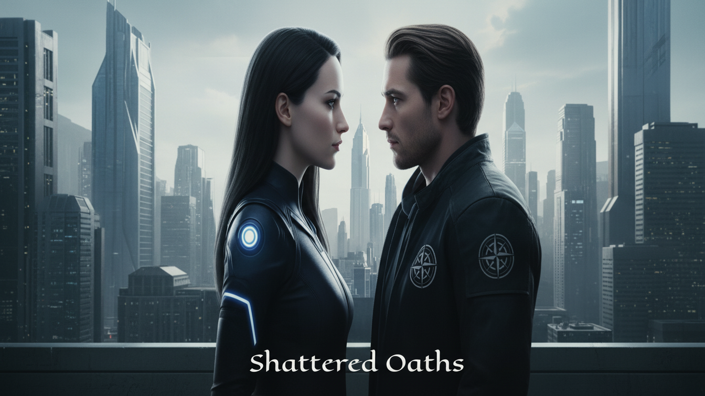

Neo-Eden
A city defined by control, where appearances conceal a more dangerous reality.
Power is rising. Trust is dying. In a world where loyalty is programmed, rebellion begins with a single choice.

Order is everything. But beneath the city's carefully maintained surface, the truth is beginning to fracture. Explore the forces at the heart of Shattered Oaths.
A city defined by control, where appearances conceal a more dangerous reality.
The power behind the order. Its secrets may be more dangerous than its enemies.
What happens when the people meant to uphold the system begin to question it?
A former commercial district, now scarred by destruction.
Illustrative interface. Relative positions are not established by the novel.
A former Apex operative branded a fugitive. He knows the system from the inside.
An elite Apex agent trained to obey. One moment of hesitation changes everything.
Apex watches, commands and demands loyalty. But even the most carefully maintained system has fractures.
Access classified files →Some records were never meant to be opened. Access the first classified transmission.
Record status: SEALED
Authorization: UNKNOWN
Subject: THE FAILED KILL ORDER
Kai Vex is a ghost in Neo-Eden's machine. Selene is the Apex agent sent to hunt him. When their paths collide, they discover that the greatest threat may be the truth Apex has buried.